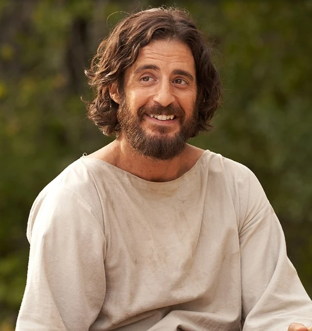
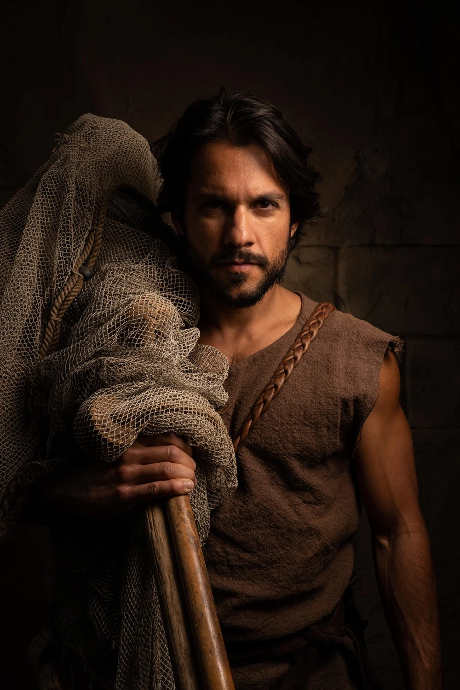
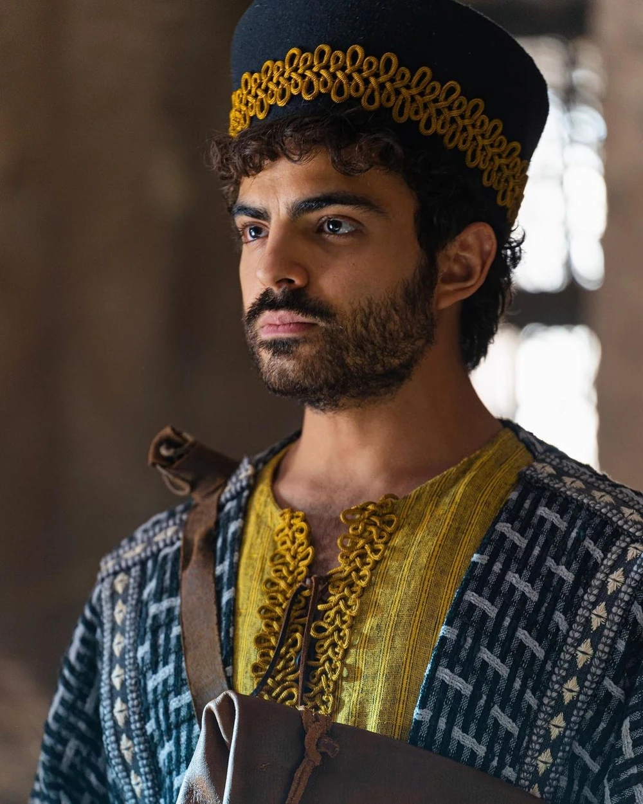
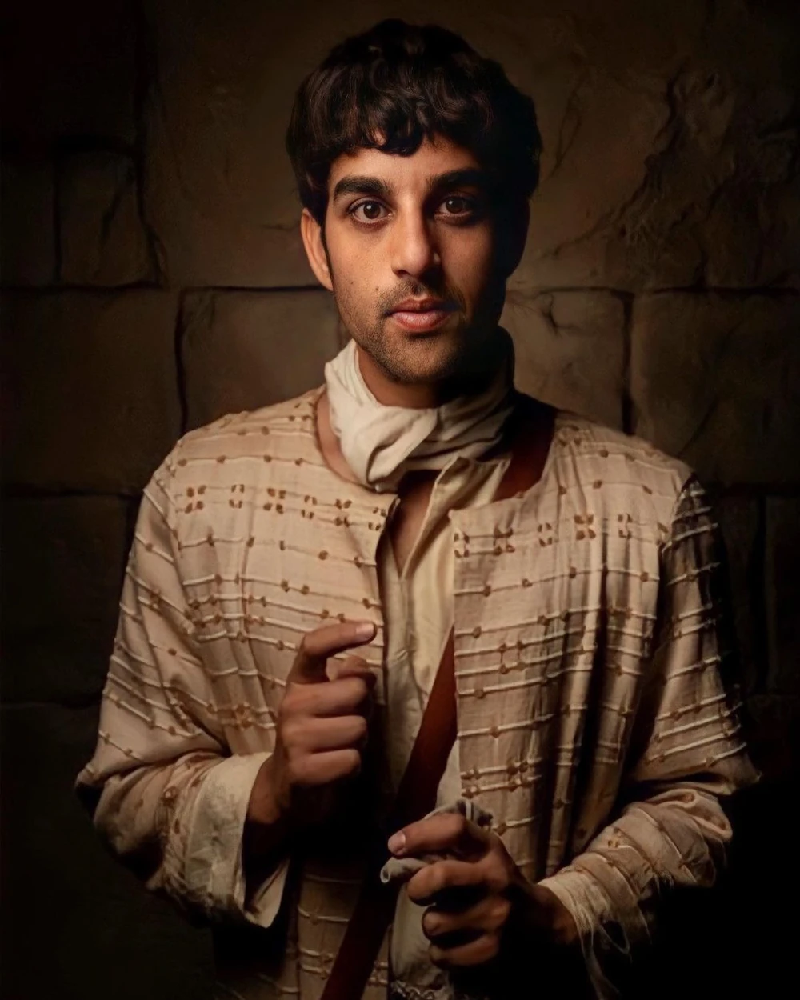

Jesus
Jesus is the central figure of Christianity, believed to be the Son of God and the Messiah who taught love, compassion, and salvation through His life, death, and resurrection.
Simon Peter
A fisherman who became the leader of the apostles and is often considered the "rock" of the Church.
Andrew

Peter's brother, a fisherman, and the first disciple called by Jesus.
Big James
Brother of John, known for his fiery zeal and one of the "Sons of Thunder."
John

The "beloved disciple," brother of James, and traditionally believed to have written the Gospel of John and Revelation.
Philip
Known for his questioning nature and bringing Nathanael (Bartholomew) to Jesus.
Nathanael
Known for his honesty and being introduced to Jesus by Philip.
Matthew
A former tax collector who became one of Jesus' disciples and traditionally authored the Gospel of Matthew.
Thomas
Famously known as "Doubting Thomas" for questioning Jesus' resurrection until he saw Him in person.
Little James

Often referred to as James the Less, a lesser-known apostle.
Thaddaeus

Also known as Jude, he is often associated with the letter of Jude in the New Testament.
Simon the Zealot
Known for his zealous nature, possibly associated with the Zealot political movement.
Judas
The apostle who betrayed Jesus, leading to His arrest and crucifixion.